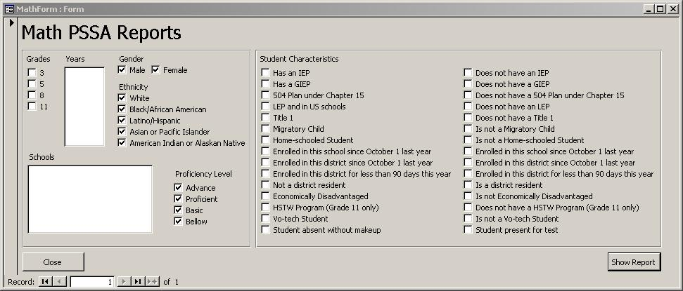
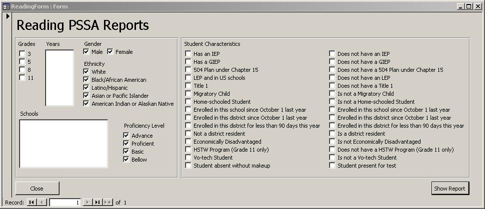
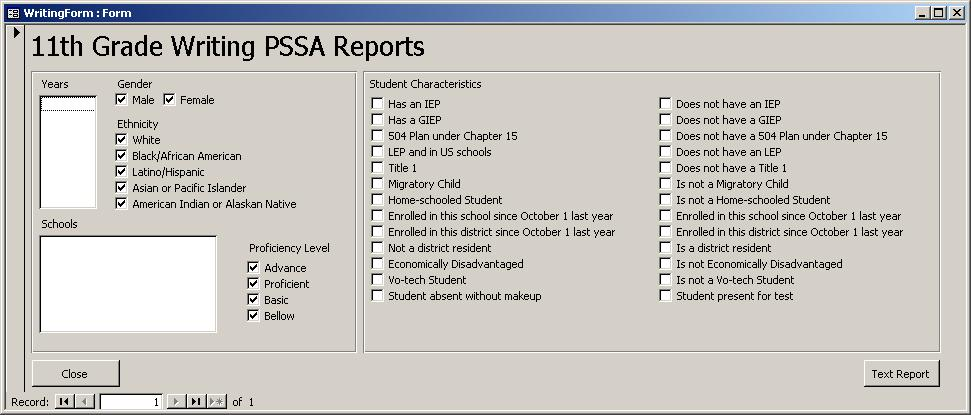

PSSA Student Database Help File
Working with Forms
The three forms: Math Form, Reading Form and Writing Form, are what are used to generate reports based on
student's results.
Each form is used to generate a report based on its corresponding subject for any of the grades or schools.
The only exception to this is the Writing Form only generates data for 11th Grade because this is the only
grade that takes this test.
To use these forms, you must select at least one grade, year or school. Multiple selections can be made.
In addition, at least one selection from gender, ethnicity, and proficiency level must be made.
Selecting options from the Student Characteristics section will narrow your search results. Only one option
from each row may be selected. For example, you can not select "Has an IEP" and "Does not have an IEP" at
the same time. You do not need to select any of these options to generate a report.
Once you have made your selections, press the "Show Report" button to view the report. Press the "Close"
button to return to the main menu.
Examples of what each form looks like is given below:
Math Form
This form is used to generate a report based on the math section of the PSSA Tests.

Reading Form
This form is used to generate a report based on the reading section of the PSSA Tests.

Writing Form
This form is used to generate a report based on the writing section of the PSSA Tests. For this form
you do not need to select the grade for only 11th grade takes this test.

Next Topic
| Return to Index
| Back